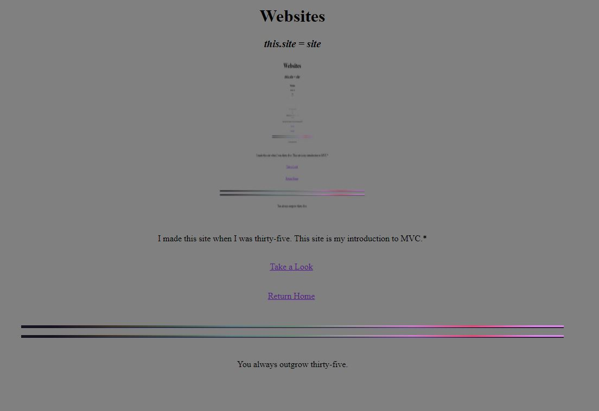
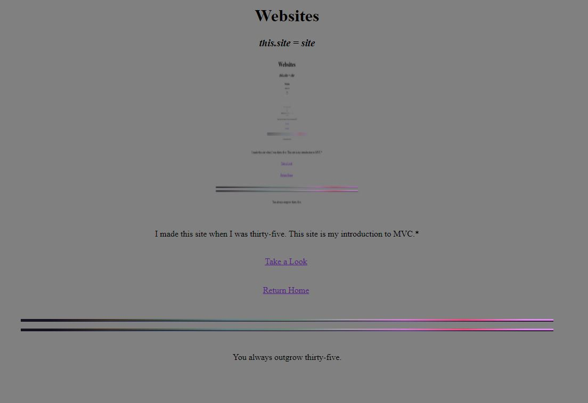

Project Virtual Pet was created to detect adequate pet owners. It failed...miserably.Technologies used: Java!
Projects!
 

Reviews is full stack at its best. Call now for a live demo!Technolgies used: Java, Thymeleaf, HTML, CSS!
Medieval monks dreamed of it: an automated syllogism validity checker.Technologies used: Java and Centuries of Human Knowledge!
Danny DeVito was created by the KGB to dull American moral sensibilities.Technologies used: Danny DeVito and Thymeleaf!